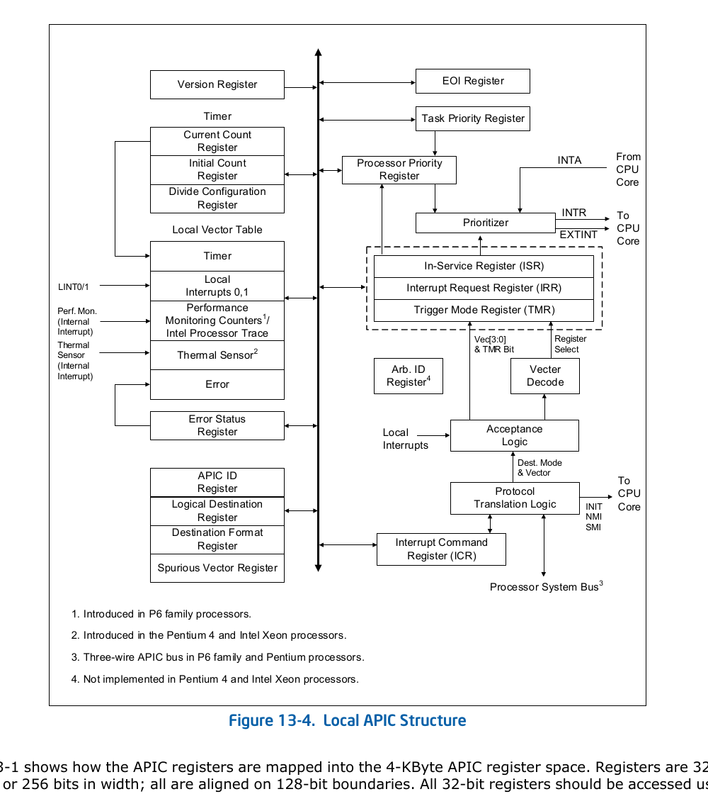
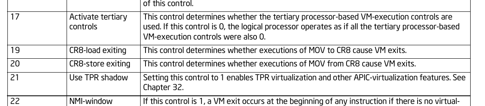
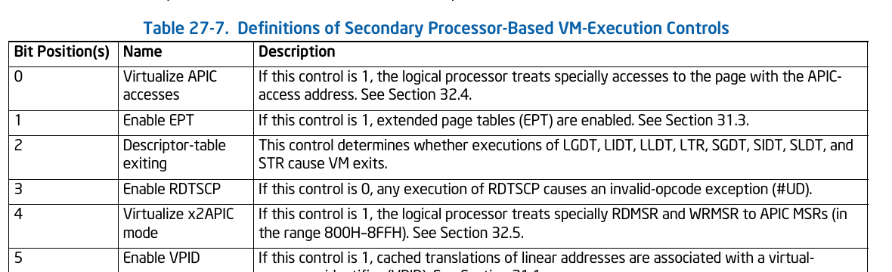
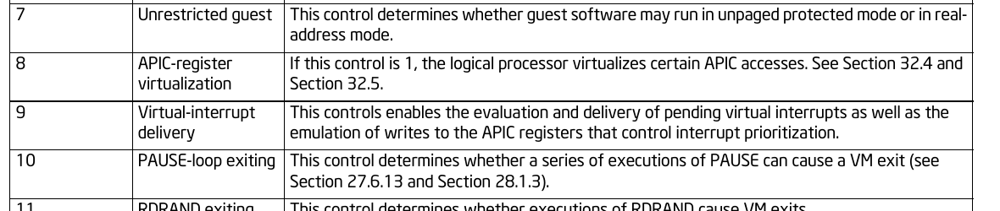
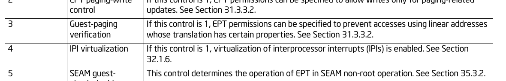
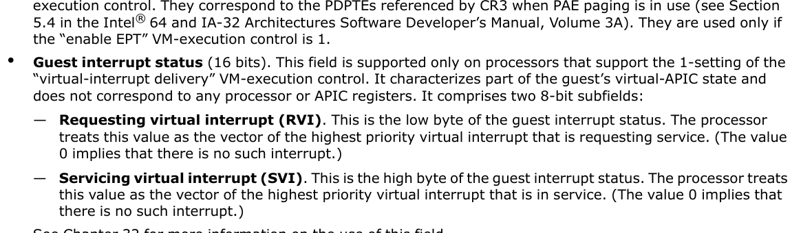
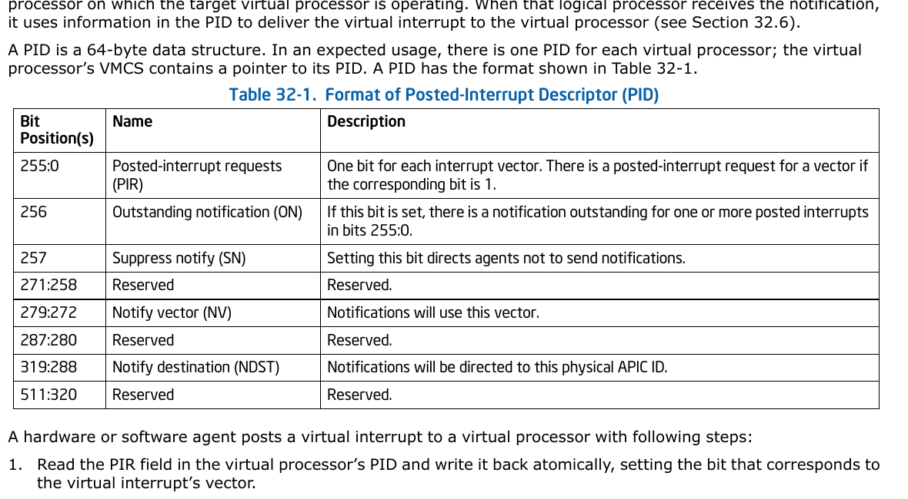
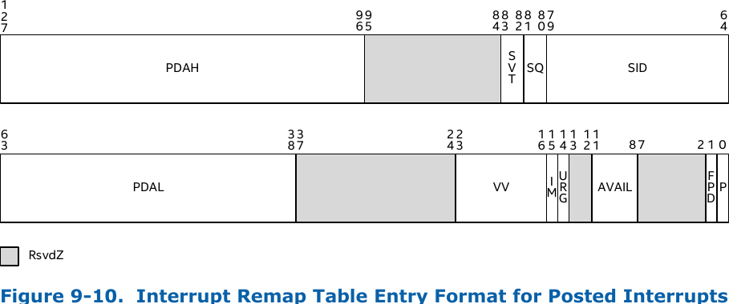

Intel APICv Review
文档类型：体系结构与 Linux KVM 实现分析
Intel 架构基线：Intel® 64 and IA-32 SDM Vol. 3A/3B/3C/3D，版本 092，2026-06
VT-d 基线：Intel® VT-d Architecture Specification，Intel 页面版本 5.2 / PDF Revision 5.10，2025-11
KVM 代码基线：Linux 主线提交481ed5dd3ed7（7.2-rc3）
说明：文中的 Intel SDM 插图均截取自版本 092，仅用于技术分析；章节号会随 SDM 修订发生变化。
摘要
APICv（APIC Virtualization）不是单一开关，而是一组逐层减少 VM Exit 的硬件机制：
- 用 TPR shadow 消除 Guest 通过 CR8/TPR 修改中断优先级时的部分 VM Exit；
- 用 APIC-access page + virtual-APIC page 加速 xAPIC 的 MMIO 寄存器访问；
- 用 x2APIC virtualization + APIC-register virtualization 加速 x2APIC 的 MSR 访问；
- 用 Virtual-interrupt delivery 在 VMX non-root 中完成待处理中断的优先级判断和投递；
- 用 Posted Interrupt（PI） 把软件或设备产生的虚拟中断先记录到每 vCPU 的 PID，再通过一个物理通知中断让 CPU 将其合入 virtual-APIC page，目标 vCPU 正在运行时可不退出到 KVM；
- 用较新的 IPI virtualization 让 Guest 的普通定向 IPI 也可以由硬件通过 PID-pointer table 直接投递，而不再总是 VM Exit 到 KVM。
APICv 的核心思想可以概括为：
把“访问虚拟 APIC 寄存器”“维护虚拟 LAPIC 状态”“选择可投递的虚拟中断”“通知正在运行的目标 vCPU”这几条高频路径，从 KVM 软件慢路径下沉到处理器和中断重映射硬件。
但 APICv 并没有删除 KVM 的软件 LAPIC。KVM 仍负责建立和恢复 LAPIC 状态、处理硬件无法虚拟化的寄存器副作用、维护 EOI 语义、处理 vCPU 调度迁移、配置 VT-d IRTE、支持嵌套虚拟化，并在约束不满足时动态关闭 APICv、回退到软件注入。
1. 为什么需要 APIC 虚拟化
1.1 Local APIC 在中断路径中的位置
每个逻辑 CPU 都有一个 Local APIC。它至少承担以下职责：
- 接收来自 I/O APIC、MSI/MSI-X、其他 CPU 的 IPI 和本地中断源；
- 通过 IRR（Interrupt Request Register）保存尚未服务的中断；
- 通过 ISR（In-Service Register）保存正在服务的中断；
- 通过 TPR/PPR 和中断向量的高 4 位进行优先级仲裁；
- 通过 EOI 完成当前中断并允许后续中断进入；
- 通过 ICR 发送 IPI；
- 维护 Local APIC Timer 和 LVT。

上图来自 Intel SDM Figure 13-4。理解 APICv 时最重要的是右侧的 IRR → Prioritizer → ISR → EOI 状态机。APICv 的 virtual-APIC page 基本沿用了这套寄存器布局，Virtual-interrupt delivery 则在硬件中实现了这条状态机的关键部分。
1.2 纯软件虚拟化的成本
没有 APICv 时，Guest 的 LAPIC 一般由 KVM 的 in-kernel LAPIC 模拟：
Guest 访问 LAPIC MMIO/MSR
↓
VM Exit
↓
KVM 解码指令或 MSR，模拟寄存器语义
↓
更新软件 IRR/ISR/TPR/PPR
↓
必要时配置 VM-entry interruption-information 字段
↓
VM Entry 返回 Guest
中断密集型负载会频繁执行 TPR、EOI、ICR、x2APIC MSR 操作；设备中断和 vCPU 间 IPI 也会频繁唤醒目标 vCPU。每次 VM Exit/Entry 不仅有固定切换成本，还会扰动流水线、缓存和分支预测状态。APICv 的性能价值主要来自减少这些高频退出，而不是改变 Guest 看到的 APIC 编程模型。
1.3 三种需要分开理解的“中断虚拟化”
容易混淆的三条路径是：
| 路径 | 典型动作 | APICv 负责的部分 |
|---|---|---|
| Guest 访问 LAPIC | 读写 TPR、EOI、ICR、IRR/ISR 等 | 寄存器访问虚拟化、部分写副作用模拟 |
| KVM 向 vCPU 注入中断 | 虚拟 IOAPIC、定时器、其他 vCPU 产生中断 | PIR/IRR、RVI、Virtual-interrupt delivery |
| 直通设备产生中断 | VFIO 设备发 MSI/MSI-X | VT-d Interrupt Posting + CPU Posted-Interrupt processing |
第一条是“寄存器访问加速”，第二条是“虚拟中断注入加速”，第三条是“设备中断直投”。三者共享 virtual-APIC/PID 等状态，但触发者和硬件路径不同。
2. APICv 能力栈与依赖关系
当前 SDM Chapter 32 列出七项相关控制。原始笔记列出了六项，缺少后来加入的 IPI virtualization。
2.1 VM-execution controls
| 控制 | VMCS 控制类别 | 解决的问题 | 典型依赖 |
|---|---|---|---|
| Use TPR shadow | Primary processor-based bit 21 | CR8/TPR 读写无需总是退出 | in-kernel LAPIC、virtual-APIC page |
| Virtualize APIC accesses | Secondary bit 0 | 识别 xAPIC MMIO 对 APIC-access page 的访问 | TPR shadow、APIC-access address |
| Virtualize x2APIC mode | Secondary bit 4 | 特殊处理 0x800–0x8ff APIC MSR |
TPR shadow、MSR bitmap |
| APIC-register virtualization | Secondary bit 8 | 从 virtual-APIC page 直接满足多数 APIC 读取；转发部分写 | TPR shadow |
| Virtual-interrupt delivery | Secondary bit 9 | 评估并在 non-root 中投递虚拟中断 | TPR shadow、Guest interrupt status |
| Process posted interrupts | Pin-based bit 7 | 识别通知向量，将 PID.PIR 合并到 VIRR | Virtual-interrupt delivery、External-interrupt exiting |
| IPI virtualization | Tertiary bit 4 | Guest 定向 IPI 通过 PID-pointer table 直投 | APICv、tertiary controls、PID table |




这些控制不是任意组合。Intel 规定：
APIC-register virtualization、Virtualize x2APIC mode和Virtual-interrupt delivery依赖Use TPR shadow；Process posted interrupts依赖Virtual-interrupt delivery；- VM Entry 只允许在
External-interrupt exiting=1时启用Process posted interrupts； - Secondary controls 只有在 Primary 的
Activate secondary controls=1时有效； - IPI virtualization 只有在 Primary 的
Activate tertiary controls=1时有效。
KVM 在 setup_vmcs_config() 中按照这些依赖过滤硬件能力。例如硬件没有 TPR shadow 时，KVM 会同时清除 APIC-register virtualization、x2APIC virtualization 和 Virtual-interrupt delivery；没有 Virtual-interrupt delivery 时也不会启用 Posted Interrupt。
2.2 能力代际
APICv 在工程语境中有时被宽泛地用来指所有 APIC 加速，但可以按能力分层：
FlexPriority / TPR shadow
↓
xAPIC-access virtualization + x2APIC virtualization
↓
APIC-register virtualization + Virtual-interrupt delivery
↓
Posted Interrupt（软件/设备向目标 vCPU 投递）
↓
IPI virtualization（Guest 发送普通定向 IPI 的硬件化）
Linux KVM 当前用 cpu_has_vmx_apicv() 将 APIC-register virtualization + Virtual-interrupt delivery + Posted Interrupt 作为完整 VMX APICv 的基本条件；xAPIC MMIO 和 x2APIC MSR 的访问虚拟化能力则分别判断。
3. 核心数据结构
3.1 总览
| 数据结构/字段 | 粒度 | 主要内容 | KVM 中的对应物 |
|---|---|---|---|
| APIC-access page | 通常每 VM 一个 4 KiB 页面 | xAPIC MMIO 访问的识别入口，不是 vCPU 的 LAPIC 状态 | KVM 私有 memslot，GPA 通常为 0xfee00000 |
| virtual-APIC page | 每 vCPU 一个 4 KiB 页面 | VTPR、VPPR、VISR、VIRR、VEOI、VICR 等 | vcpu->arch.apic->regs |
| Guest interrupt status | 每 vCPU VMCS 的 16 位字段 | 低 8 位 RVI，高 8 位 SVI | GUEST_INTR_STATUS |
| EOI-exit bitmap | 每 vCPU VMCS，4×64 位 | 指定哪些向量的 EOI 需要 VM Exit | EOI_EXIT_BITMAP0..3 |
| Posted-Interrupt Descriptor | 每 vCPU 一个 64 字节结构 | PIR、ON、SN、NV、NDST | struct pi_desc / vcpu_vt.pi_desc |
| PID-pointer table | 每 VM 一个表 | virtual APIC ID → PID 物理地址 | kvm_vmx->pid_table |
3.2 APIC-access page 与 virtual-APIC page
这两个页面名字相近，但作用完全不同：
Guest xAPIC MMIO 地址（通常 GPA 0xfee00000）
│
▼
APIC-access page
（每 VM 共享的访问识别入口）
│ CPU 按 VMCS 控制判断
┌─────────┴──────────┐
▼ ▼
APIC-access VM Exit 重定向/读取/写入
│
▼
virtual-APIC page
（每 vCPU 的 LAPIC 状态）
为什么需要两个页面：Guest 的页表/EPT 映射可以在所有 vCPU 间共享同一个 APIC MMIO 入口，但每个 vCPU 必须看到自己的 Local APIC 状态。因而各 vCPU VMCS 可以使用相同的 APIC-access address，却必须使用不同的 virtual-APIC address。
KVM 通过 kvm_alloc_apic_access_page() 建立内部 memslot；vmx_set_apic_access_page_addr() 取得 PFN 并写入 APIC_ACCESS_ADDR。KVM 不长期 pin 这个页面，页面迁移或失效后通过 KVM_REQ_APIC_PAGE_RELOAD 重新装载。
virtual-APIC page 直接复用 KVM 的 LAPIC 寄存器页。vCPU 初始化时，vmx.c 把 __pa(vcpu->arch.apic->regs) 写入 VIRTUAL_APIC_PAGE_ADDR。因此它既是 KVM 的软件 LAPIC 状态，也是硬件 APICv 的共享状态页。
3.3 virtual-APIC page 中的关键寄存器
| 名称 | 偏移/组成 | 含义 |
|---|---|---|
| VTPR | 0x080 |
虚拟 Task Priority Register |
| VPPR | 0x0a0 |
虚拟 Processor Priority Register |
| VEOI | 0x0b0 |
虚拟 EOI |
| VISR | 0x100..0x170，8×32 位 |
正在服务的虚拟中断位图 |
| VIRR | 0x200..0x270，8×32 位 |
待服务的虚拟中断位图 |
| VICR_LO/HI | 0x300/0x310 |
虚拟 ICR，用于 self-IPI/IPI virtualization |
这些偏移与 xAPIC 的 4 KiB 寄存器布局一致，所以硬件可以把合法的 APIC-access page 操作映射到同偏移的 virtual-APIC page。
3.4 RVI 与 SVI
GUEST_INTR_STATUS 不对应真实 APIC 寄存器，而是 VMCS 中的 APICv 元数据：
- RVI（Requesting Virtual Interrupt）：低 8 位，当前最高优先级待处理虚拟中断向量；
- SVI（Servicing Virtual Interrupt）：高 8 位，当前最高优先级正在服务的虚拟中断向量。

VIRR/VISR 是 256 位集合；RVI/SVI 是各自集合的最高向量缓存。KVM 的 vmx_set_rvi() 与 vmx_hwapic_isr_update() 分别更新它们。
3.5 Posted-Interrupt Descriptor
PID 是 64 字节、64 字节对齐的数据结构，通常每个 vCPU 一个：

| 字段 | 作用 |
|---|---|
| PIR[255:0] | 每个虚拟中断向量一个 bit；置 1 表示该向量已 posted |
| ON | Outstanding Notification；1 表示已有通知在途，防止重复通知风暴 |
| SN | Suppress Notification；1 表示暂时不发送普通通知 |
| NV | Notification Vector；发送给物理 CPU 的通知向量 |
| NDST | Notification Destination；目标物理 CPU 的 APIC ID |
KVM 的 struct pi_desc 与硬件布局一致，并以 64 字节对齐。PIR、ON 和控制字必须用原子操作更新，因为目标 CPU、其他 vCPU 和 IOMMU 可能同时访问该 cache line。
3.6 PID-pointer table
IPI virtualization 需要从 Guest 提供的目标 virtual APIC ID 找到目标 PID。VMCS 因此新增：
PID_POINTER_TABLE：表的物理地址；LAST_PID_POINTER_INDEX：最后一个有效索引；- 每个 64 位表项的 bit 0 是 valid，bits 63:6 是 PID 地址。
KVM 在 vmx_alloc_ipiv_pid_table() 为 VM 分配表，在 vCPU 创建时写入 PID physical address | valid，再由 init_vmcs() 将表地址与最大 vCPU ID 写入 VMCS。
硬件架构硬限制（Intel SDM 规定）
PID-pointer table 是4KB 对齐的单页表，每个表项是 8 字节（64bit），存放对应 APIC ID 的 PID 物理地址：
单页 4096B / 8B per entry = 512 个表项
VMCS 中 LAST_PID_POINTER_INDEX 是16bit 无符号值，理论上限 65535，但硬件强制要求 PID-pointer table 只能是单个 4K 页，因此硬件原生上限：
单 VM IPIv 原生硬件最大支持：512 个 vCPU（APIC ID 0~511）
索引范围 0 ~ LAST_PID_POINTER_INDEX，最大值固定 511，对应 512 个 vCPU。
因此，超过512个vCPU无法享受IPIv加速功能！！！
4. 虚拟中断优先级状态机
4.1 TPR、PPR 与向量优先级
x86 APIC 使用向量高 4 位作为 priority class。简化关系为：
VTPR.class = VTPR[7:4]
SVI.class = SVI[7:4]
如果 VTPR.class >= SVI.class：VPPR = VTPR & 0xff
否则： VPPR = SVI & 0xf0
Virtual-interrupt delivery 评估待处理中断时，核心条件是：
RVI[7:4] > VPPR[7:4]
也就是说，只有最高待处理中断的优先级类严格高于当前处理器优先级时才会被识别。
4.2 TPR virtualization
启用 Use TPR shadow 后：
MOV from CR8从 VTPR[7:4] 返回优先级；MOV to CR8写入 VTPR[7:4]；- xAPIC 的
0x80MMIO 和 x2APIC 的MSR 0x808也可以走同一虚拟状态； - 如果没有 Virtual-interrupt delivery，VTPR 低于 VMCS 的 TPR threshold 时产生 trap-like
TPR below thresholdVM Exit； - 如果启用了 Virtual-interrupt delivery，则硬件重算 VPPR 并重新评估待处理中断。
KVM 的 vmx_exec_control() 在能够使用 TPR shadow 时清除 CR8 load/store exiting，否则重新打开 CR8 退出。这体现了“硬件快路径不可用就回到拦截”的基本策略。
4.3 EOI virtualization
Guest 写 EOI 时，硬件大致执行：
vector = SVI
VISR[vector] = 0
SVI = highest_set_bit(VISR)，没有则为 0
重算 VPPR
如果 EOI_EXIT_BITMAP[vector] == 1：
产生 EOI-induced VM Exit
否则：
重新评估待处理中断
EOI-exit bitmap 的意义是：多数普通 EOI 可以由硬件完成，但某些向量仍必须通知 KVM。例如来自虚拟 IOAPIC 的 level-triggered 中断需要 KVM 完成远端 IRR/解除电平状态等软件语义。
KVM 用 vmx_load_eoi_exitmap() 装载 256 位 bitmap；handle_apic_eoi_induced() 处理硬件要求退出的向量。
4.4 待处理中断的识别与投递
硬件只在以下事件后重新评估 pending virtual interrupt：
- VM Entry；
- TPR virtualization；
- EOI virtualization；
- self-IPI virtualization；
- posted-interrupt processing。
识别条件除了 RVI.class > VPPR.class，还要求 Interrupt-window exiting=0。真正投递发生在指令边界，并要求：
RFLAGS.IF=1；- 没有 STI blocking；
- 没有 MOV SS/POP SS blocking；
Interrupt-window exiting=0。
投递时硬件执行的核心状态迁移为：
vector = RVI
VISR[vector] = 1
SVI = vector
VPPR = vector & 0xf0
VIRR[vector] = 0
RVI = highest_set_bit(VIRR)，没有则为 0
向 Guest IDT 投递 vector
整个过程发生在 VMX non-root，不需要先退出到 KVM，也通常不需要 KVM 在下一次 VM Entry 中填写 interruption-information 字段。
5. xAPIC MMIO 访问虚拟化
5.1 三种处理结果
Guest 在 xAPIC 模式访问通常位于 0xfee00000 的 MMIO 页面时，可能出现三种结果：
| 结果 | 原因 | KVM 处理 |
|---|---|---|
| 硬件直接完成 | 寄存器/访问宽度受支持，相关 APICv 控制已启用 | 无 VM Exit |
| APIC-access VM Exit | 访问无法硬件虚拟化，或控制未启用 | handle_apic_access()，必要时完整指令模拟 |
| APIC-write VM Exit | 写已转发到 virtual-APIC page，但副作用需软件补全 | handle_apic_write()，trap-like，不再前移 RIP |
这与普通 EPT 异常是不同路径：
- EPT violation：二阶段页表权限或映射导致的通用内存退出；
- EPT misconfiguration：EPT 表项组合非法，通常不应作为正常 MMIO 截获的泛称；
- APIC-access VM Exit：处理器识别到对 VMCS 指定 APIC-access page 的特殊访问；
- APIC-write VM Exit：硬件已完成写入和必要别名转换，但要求 VMM 模拟寄存器副作用。
5.2 读路径
在访问宽度、对齐、目标寄存器等条件满足时：
- TPR 可由 TPR shadow 读取；
- 启用 Virtual-interrupt delivery 后可读取 EOI/ICR-low 的虚拟值；
- 启用 APIC-register virtualization 后，多数 APIC 寄存器从 virtual-APIC page 同偏移读取。
指令取值、超过 32 位、不合适的对齐/寄存器操作数、特殊指令等仍可能触发 APIC-access VM Exit。
5.3 写路径及副作用
硬件通常先把数据写入 virtual-APIC page，再根据偏移执行：
0x080 TPR：清理保留字节并执行 TPR virtualization；0x0b0 EOI：执行 EOI virtualization，或产生 APIC-write VM Exit；0x300 ICR-low：匹配 self-IPI 或 IPI virtualization 条件，否则退出；0x310 ICR-high：规范化 VICR_HI；- 其他带复杂副作用的寄存器：产生 APIC-write VM Exit，由 KVM 完成。
handle_apic_write() 不需要重新解码 Guest 指令：硬件已经把正确值写到 virtual-APIC page，KVM 只需根据 exit qualification 的寄存器偏移调用 kvm_apic_write_nodecode()。
6. x2APIC MSR 访问虚拟化
x2APIC 把寄存器访问从 MMIO 改成 RDMSR/WRMSR，APIC MSR 范围为 0x800–0x8ff，寄存器偏移换算关系为：
virtual-APIC page offset = (MSR index & 0xff) << 4
启用 Virtualize x2APIC mode 后：
RDMSR可以从 virtual-APIC page 读取；- TPR、EOI、self-IPI 和满足条件的 ICR 写可以由硬件执行特殊处理；
- 不支持的寄存器或写入形式仍按 MSR bitmap 退出到 KVM。
KVM 在 vmx_update_msr_bitmap_x2apic() 中动态调整 MSR bitmap：
- APICv 活跃时放行大多数有效 x2APIC 读；
- 当前计数等必须由软件按需计算的寄存器仍拦截；
- 放行 EOI 与 self-IPI 写；
- IPI virtualization 可用时进一步放行 ICR 读写。
因此，“Virtualize x2APIC mode=1”并不等于所有 APIC MSR 都无退出；真正行为由 VMCS 控制、MSR bitmap、寄存器类型和写入格式共同决定。
7. Posted Interrupt 原理
7.1 软件投递算法
KVM 或其他软件向目标 vCPU 投递向量 V 时执行：
原子置位 PID.PIR[V]
如果该位原本已为 1：结束（请求已经存在）
原子 test-and-set PID.ON
如果 ON 原本已为 1：结束（已有通知在途）
根据目标 vCPU 状态：
IN_GUEST_MODE → 向目标 pCPU 发送 NV 通知 IPI
不在 Guest → 唤醒 vCPU；下次 VM Entry 前软件同步 PIR
对应代码是 __vmx_deliver_posted_interrupt() 和 kvm_vcpu_trigger_posted_interrupt()。
ON 位实现通知合并：多个不同向量可以同时累积在 PIR 中，但只需一个物理通知。目标 CPU 处理通知时会一次性收割 PIR。
7.2 CPU 收到通知后的硬件处理
当目标 vCPU 正在 VMX non-root，物理 CPU 收到的向量等于 VMCS 的 Posted-Interrupt Notification Vector 时，CPU 不按普通 external-interrupt VM Exit 处理，而是不可中断地：
确认物理 Local APIC 上的通知中断
原子清 PID.ON
对通知向量执行物理 EOI
VIRR |= PID.PIR
清 PID.PIR
RVI = max(旧 RVI, PIR 中最高向量)
评估并可能立即投递虚拟中断
这正是“posted”一词的含义：发起者只把请求记录到 PID，真正把它并入虚拟 LAPIC 并投递给 Guest 的工作由目标 CPU 完成。
7.3 vCPU 正在运行、不运行和阻塞时的区别
| vCPU 状态 | PID 配置/动作 | 结果 |
|---|---|---|
| 正在 Guest 中运行 | SN=0，NV=POSTED_INTR_VECTOR，NDST=当前 pCPU |
通知 IPI 被 CPU 硬件直接消费，通常无 VM Exit |
| 已退出但仍 runnable | PIR 保留；通知可能成为无害的空通知 | 下一次进入前 sync_pir_to_irr() 收割 |
| 被抢占、暂不需要唤醒 | 设置 SN=1 |
只累积 PIR，避免干扰运行其他任务的 pCPU |
| 因 HLT 等阻塞，需要中断唤醒 | NV=POSTED_INTR_WAKEUP_VECTOR 并加入每 CPU wakeup list |
Host handler 唤醒 vCPU |
| vCPU 迁移到另一 pCPU | 原子更新 NDST，恢复 active NV，清 SN |
后续通知路由到新 pCPU |
KVM 在 vmx_vcpu_pi_put() 和 vmx_vcpu_pi_load() 中实现这套调度状态机；pi_wakeup_handler() 扫描对应 pCPU 的阻塞 vCPU 列表。
7.4 PIR 到 IRR 的软件回退
并非所有通知都能在 non-root 中由硬件消费。例如目标 vCPU 已退出、APICv 被动态 inhibit、或正在运行嵌套 Guest。KVM 的 vmx_sync_pir_to_irr() 会：
- 清 ON；
- 用原子交换把 PIR 合入 KVM LAPIC 的 IRR；
- 找到最高优先级 IRR；
- APICv 仍可使用时更新 VMCS.RVI；
- 否则发出
KVM_REQ_EVENT，走传统事件注入路径。
这说明 PID 既服务于硬件快路径，也是软件回退路径的可靠请求队列。
8. 直通设备中断：VT-d Interrupt Posting
8.1 CPU Posted Interrupt 与 VT-d Interrupt Posting 的分工
这两个名称相近，但位于中断链路的不同位置：
| 机制 | 所在硬件 | 输入 | 输出 |
|---|---|---|---|
| VT-d Interrupt Posting | IOMMU/Interrupt Remapping 单元 | 设备的 remappable MSI/MSI-X 或 IOAPIC 中断 | 原子置位内存中的 PID.PIR[vector]，必要时产生通知中断 |
| CPU Posted-Interrupt processing | 目标逻辑处理器 | notification interrupt | 清 PID.ON，把 PIR 合入 virtual-APIC IRR，更新 RVI |
| Virtual-interrupt delivery | 目标逻辑处理器 VMX non-root 执行环境 | virtual-APIC IRR、RVI、SVI、TPR/PPR | 在优先级和屏蔽条件允许时直接进入 Guest IDT handler |
因此，VT-d PI 不是独立的 Guest 中断控制器。它是 设备侧的 PID 生产者；CPU APICv 是 PID 消费者和最终投递者。只有两侧能力和 KVM 配置都满足时，直通设备中断才能形成完整的无 Host handler 快路径。
8.2 posted-format IRTE
普通 Interrupt Remapping 使用 remapped-format IRTE，将设备中断变成送往某个 Host APIC ID、Host vector 的物理中断。IRTE 的 IM（IRTE Mode）为 1 时，硬件把同一个 128-bit 表项解释为 posted format：

关键字段如下：
| 字段 | 作用 |
|---|---|
PDAH/PDAL |
64-byte 对齐的 Posted-Interrupt Descriptor 地址 |
VV |
Virtual Vector；设备中断到达时要置位的 PIR[VV]，这是 Guest vector |
IM |
1 表示 posting，0 表示普通 interrupt remapping |
URG |
1 表示紧急请求；即使 PID.SN=1，也允许触发通知 |
SID/SQ/SVT |
校验请求源，约束哪些 PCI requester 可以使用该 IRTE |
P/FPD |
表项有效性和 fault reporting 控制 |
这里最容易混淆的是 IRTE.VV 与 PID.NV：
IRTE.VV是最终给 Guest 的虚拟中断向量，用来选择 PIR 中的 bit；PID.NV是通知目标物理 CPU 的 Host vector，只负责让 CPU 启动 posted-interrupt processing；PID.NDST是通知要送到的物理 APIC ID；- 所以 posted-format IRTE 不需要为每次 vCPU 调度迁移改写目标 pCPU，它稳定地指向“每 vCPU PID”，调度器只需更新 PID.NDST。
Linux Intel IOMMU 驱动在 intel_ir_set_vcpu_affinity() 中保留原 IRTE 的 source-validation 等共享字段，然后设置 p_pst、p_vector、pda_l/pda_h。这样切换到 posted mode 不会丢失设备来源校验。
8.3 IOMMU 的原子 posting 算法
根据 VT-d 规范 5.2.3，IOMMU 读取 posted-format IRTE 后，对 PID 所在 cache line 取得 exclusive ownership，并以 coherent atomic read-modify-write 完成：
PIR[IRTE.VV] = 1
X = (ON == 0) && (IRTE.URG == 1 || SN == 0)
if X:
ON = 1
向 NDST 发送向量 NV 的 edge-triggered physical interrupt
三个控制位共同解决了高并发下的通知风暴：
PIR允许 256 个向量独立积累，重复置同一 bit 自然合并；ON=1表示已有通知在途或尚未消费，后续请求只置 PIR，不再重复通知；SN=1抑制非 urgent 通知，适合 vCPU 被抢占但仍为 runnable 的状态；URG=1可以越过 SN。
硬件在 PID reserved bit 非零、地址/表项不合法或来源校验失败时阻断请求，并按 interrupt-remapping fault 处理。PID 必须位于 coherent、write-back 内存，而且软件需要阻止设备通过普通 DMA 修改 PID；否则 IOMMU 的原子更新无法与设备的任意写保持一致。
8.4 内存与中断顺序
设备驱动常依赖“看见完成中断时，此前 DMA 数据已经可见”。把中断改成内存置位不能破坏这个契约。VT-d 规范因此要求：
- 在 PIR 更新对软件可见前，设备此前的 inbound DMA 写必须已经提交；
- PID 的修改必须先全局可见，IOMMU 才能发送 notification interrupt；
- 上行 read completion 也必须等待此前的 posted interrupt 完成；这里的“完成”包括 PID 原子更新和必要的通知；
- 不同 interrupt request 之间不承诺额外的全序，Guest 驱动仍应使用设备协议规定的 barrier/doorbell 语义。
这解释了为什么 PIR 不能被当成普通、无序的软件 bitmap：它是设备 DMA 完成语义的一部分。
8.5 KVM、IRQ bypass 与 Intel IOMMU 的连接点
直通设备通常通过 VFIO、irqfd 和 IRQ bypass 建立“Host IRQ → Guest vCPU/vector”的映射。关键调用链是：
VFIO/irqfd route 确定 target vCPU 与 Guest vector
↓
KVM vmx_pi_update_irte(host_irq, vcpu, vector)
↓
构造 intel_iommu_pi_data {
pi_desc_addr = physical address of vcpu_vt.pi_desc
vector = Guest vector
}
↓
irq_set_vcpu_affinity(host_irq, &pi_data)
↓
Intel IOMMU intel_ir_set_vcpu_affinity()
↓
posted-format IRTE + Interrupt Entry Cache invalidation
KVM 的连接点是 vmx_pi_update_irte()。绑定时传入 PID 物理地址和 Guest vector；解绑时传 NULL，IOMMU 驱动用缓存的 remapped-format 表项恢复 Host interrupt 路径。
Intel IOMMU 的 modify_irte() 在旧表项或新表项为 posted format 时使用 cmpxchg16b 原子更新完整 128-bit IRTE。原因是 PDA 横跨 64-bit 边界；分两次写可能让硬件短暂看到由新旧两半拼出的错误 PID 地址。更新内存表项后，驱动还会 flush cache 并使 IOMMU Interrupt Entry Cache 中对应项失效。
Linux 只有在以下基本条件满足时才向上层报告 IRQ posting capability：
- CPU 支持
CMPXCHG16B，能够安全更新跨 64-bit 边界的 IRTE； - 平台上参与 interrupt remapping 的 Intel IOMMU 都报告 PI capability；
- 未通过内核参数禁用 interrupt posting；
- KVM 使用 in-kernel irqchip，且存在可建立 bypass 的 IRQ route。
另外，Intel IOMMU 驱动中的 posted_msi 与 posted_vcpu 不能混为一谈：前者还可用于 Host 自身的 MSI 聚合/分发，后者才表示这条 IRQ 被直接 post 到 KVM vCPU 的 PID。
8.6 vCPU 运行、抢占、阻塞和迁移
IRTE 指向的 vcpu_vt.pi_desc 在 vCPU 生命周期内保持稳定；变化的是 PID 控制区。KVM posted_intr.c 按调度状态维护它：
| vCPU 状态 | PID.NV | PID.SN | PID.NDST | 效果 |
|---|---|---|---|---|
| 正在运行/即将 VM-entry | POSTED_INTR_VECTOR |
0 | 当前 pCPU APIC ID | 通知可由 VMX non-root 硬件直接消费 |
| 被抢占但仍 runnable | 通常保持 active vector | 1 | 最近所在 pCPU | 只积累非 urgent PIR，避免无意义打断别的任务 |
| 因 HLT 等阻塞，且当前允许中断唤醒 | POSTED_INTR_WAKEUP_VECTOR |
0 | 等待队列所属 pCPU | Host wakeup handler 唤醒 vCPU task |
| 迁移到新 pCPU 并 sched-in | 恢复 active vector | 0 | 新 pCPU APIC ID | 新通知路由到迁移后的 CPU |
vmx_vcpu_pi_load() 用 64-bit compare-exchange 同时更新 NDST/NV/SN。必须原子更新是因为 IOMMU 随时可能把同一 control word 中的 ON 从 0 改为 1。清 SN 后，KVM 再检查 PIR；若已有 pending bit，则补设 ON，覆盖“中断恰好在 suppressed 状态到 active 状态切换期间到达”的竞态。
vmx_vcpu_pi_put() 区分“只是被抢占”和“真正阻塞”：前者设置 SN 即可，后者把 vCPU 加入 per-CPU wakeup list，并切换到 wakeup vector。绑定第一条 bypass IRQ 时，vmx_pi_start_bypass() 会请求所有 vCPU 重新评估阻塞状态，避免 vCPU 在设备绑定前已经睡眠、PID 仍保留无 handler 的 active vector。
8.7 完整设备直投路径与回退
直通设备产生 MSI/MSI-X
↓
Interrupt Remapping 根据 handle/subhandle 查 IRTE
↓
验证 P、SID/SQ/SVT；IM=1，按 posted format 解码
↓
IOMMU 原子设置 PID.PIR[IRTE.VV]
↓
若 !ON && (URG || !SN)：设置 ON，向 PID.NDST 发送 PID.NV
↓
目标 CPU：PID.PIR → virtual-APIC IRR，更新 RVI
↓
Virtual-interrupt delivery → Guest handler
目标 vCPU 正在运行时，这条路径同时绕过 Host 设备 IRQ handler 和 KVM 软件注入。如果 vCPU 不在 VMX non-root、APICv 被 inhibit，或者通知在状态切换竞态中没有被硬件消费，PID 仍保存请求；KVM 随后的 vmx_sync_pir_to_irr() 会把 PIR 合入软件 IRR，再选择 RVI 或传统事件注入。也就是说，快路径失效不会让设备中断凭空丢失。
8.8 level-triggered 中断与 EOI
VT-d posted processing 把所有请求都作为 edge-triggered request 记录，即使源头是 IOAPIC level-triggered pin。PIR bit 只表示“这个向量 pending”，不保存物理线路电平，也不会替源 IOAPIC 清 remote IRR。
因此 VMM 必须让相关 L2/Guest EOI 触发必要的软件处理，并对源 IOAPIC 执行 Directed EOI。KVM 的 EOI-exit bitmap 正是按向量选择哪些 EOI 必须退出；它不能因为启用了 PI 就永久清零。若 EOI 没有正确回传，典型表现不是“第一次中断没来”，而是第一次可以处理、此后 level line 不再重新触发或形成中断风暴。
9. IPI virtualization
9.1 解决的问题
早期 APICv 可以硬件虚拟化 self-IPI，但 Guest 向其他 vCPU 写 ICR 通常仍需 VM Exit，由 KVM 解析目标 APIC ID、找到目标 vCPU，再设置其 IRR/PIR。
IPI virtualization 增加 PID-pointer table 后，硬件可直接执行：
Guest 写 VICR，给出 vector V 与目标 virtual APIC ID T
↓
检查 V、delivery mode、trigger mode、destination mode 等是否合法
↓
PID = PID_POINTER_TABLE[T]
↓
原子置 PID.PIR[V]
↓
如果 ON=0 且 SN=0，设置 ON 并向 PID.NDST 发送 PID.NV
当前硬件快路径只覆盖规范允许的固定、边沿、物理目标、无 shorthand 等形式；最低 16 个非法向量、逻辑目标、复杂 delivery mode、无效 PID 表项等仍产生 APIC-write VM Exit。
9.2 KVM 实现
KVM 默认把 enable_ipiv 初始化为 true，但只有硬件和 APICv 都支持时才保留。关键实现点是：
vmx_tertiary_exec_control()：APICv 被 inhibit 时关闭 IPI virtualization；vmx_alloc_ipiv_pid_table()：分配每 VM PID-pointer table；init_vmcs()：写入表地址和最后索引；vmx_update_msr_bitmap_x2apic()：允许满足条件的 x2APIC ICR 访问直接进入硬件。
IPI virtualization 复用了 Posted Interrupt 的 PID、通知和调度状态机，因此阻塞 vCPU 也需要 wakeup vector 处理。
10. Linux KVM/VMX 实现路径
10.1 能力探测与全局开关
KVM 的软件默认值是：
enable_apicv = true；enable_ipiv = true；enable_device_posted_irqs = true。
定义位于 arch/x86/kvm/x86.c，由 kvm_intel 模块参数暴露。硬件初始化时：
hardware_setup / vmx_init
↓
setup_vmcs_config
↓
读取 IA32_VMX_* capability MSRs
↓
按依赖过滤 primary / secondary / tertiary / pin controls
↓
cpu_has_vmx_apicv() 不满足 → enable_apicv = false
↓
APICv 或 IPIV capability 不满足 → enable_ipiv = false
必须强调：不存在一个简单的 Guest CPUID APICv 位能完整表达 Host 是否可用。VMM 主要通过 IA32_VMX_PINBASED_CTLS、IA32_VMX_PROCBASED_CTLS{,2,3} 等 VMX capability MSR 判断各控制位是否允许为 1。
10.2 vCPU 与 VMCS 初始化
kvm_create_lapic() 为每个 vCPU 分配 4 KiB apic->regs，并在 APICv 默认启用时先把 apicv_active 设为 true、请求后续重新评估。VMX 侧随后：
- 把
apic->regs的物理地址写入VIRTUAL_APIC_PAGE_ADDR； - 清零四个 EOI-exit bitmap；
- 清零
GUEST_INTR_STATUS； - 写入 Posted Interrupt notification vector；
- 写入当前 vCPU 的 PID 地址；
- 如果支持 IPIV，写入 PID-pointer table 地址和最后索引。
相关代码集中在 init_vmcs() 和 vCPU reset 路径。
10.3 xAPIC/x2APIC 模式切换
vmx_set_virtual_apic_mode() 根据 LAPIC 当前模式切换：
- xAPIC：打开
Virtualize APIC accesses； - x2APIC：在硬件支持时打开
Virtualize x2APIC mode； - 同时更新 MSR bitmap。
APIC-register virtualization 和 Virtual-interrupt delivery 则由 vmx_refresh_apicv_exec_ctrl() 根据 apicv_active 动态设置。
10.4 软件产生的中断注入快路径
虚拟设备、虚拟 IOAPIC、其他 vCPU 或本地定时器最终向目标 LAPIC 交付中断时，VMX 路径可概括为：
vmx_deliver_interrupt(apic, delivery_mode, trig_mode, vector)
↓
vmx_deliver_posted_interrupt(vcpu, vector)
├─ APICv inactive → 返回失败
└─ APICv active
↓
__vmx_deliver_posted_interrupt
↓
设置 PIR / ON / 触发通知
失败回退：
kvm_lapic_set_irr → KVM_REQ_EVENT → kvm_vcpu_kick
入口可从 vmx_deliver_interrupt() 开始追踪。
10.5 APICv VM Exit 处理
VMX exit handler 表将几类退出分别映射到：
EXIT_REASON_APIC_ACCESS→handle_apic_access()；EXIT_REASON_APIC_WRITE→handle_apic_write()；EXIT_REASON_EOI_INDUCED→handle_apic_eoi_induced()；EXIT_REASON_TPR_BELOW_THRESHOLD→handle_tpr_below_threshold()。
其中 APIC-access 仍可能需要完整指令模拟；KVM 对普通 MOV 写 EOI 有 fasteoi 短路优化。APIC-write 和 EOI-induced 都是 trap-like，硬件已经完成引发退出的 Guest 操作，KVM 不应再次前移 RIP。
10.6 动态 inhibit 与回退
APICv 不是 VM 创建后永久开启。KVM 为不适合硬件加速的状态维护 inhibit reason。VMX 当前要求关注的原因包括：
- 模块参数或硬件关闭；
- userspace 尚未建立 in-kernel/split irqchip；
- Hyper-V AutoEOI 等不兼容语义；
- Guest 调试要求阻断中断；
- APIC ID 冲突/别名；
- Guest 修改 APIC ID；
- Guest 修改 APIC base。
定义可见 VMX_REQUIRED_APICV_INHIBITS。
__kvm_set_or_clear_apicv_inhibit() 在总状态从启用变为禁用或反向切换时：
- 请求所有 vCPU 更新 APICv；
- 必要时 kick 正在运行的 vCPU；
- 更新 inhibit bitmap；
- 关闭时 zap APIC GPA 的映射；
- 各 vCPU 更新 VMCS controls、RVI/SVI 和软件 LAPIC 缓存。
这套机制保证硬件快路径与软件状态不会在切换时同时对同一中断作不一致处理。
10.7 嵌套虚拟化
10.7.1 L0、L1、L2 与三份 VMCS
假设 Host KVM 是 L0，运行在 KVM 中的 Hypervisor 是 L1，L1 创建的 Guest 是 L2：
| 名称 | 谁创建/维护 | 表示的执行边界 | 是否直接装载到硬件 |
|---|---|---|---|
vmcs01 |
L0 KVM | L0 → L1 | 是，L1 运行时使用 |
vmcs12 |
L1 编程、L0 模拟 | L1 → L2 | 否；它位于 L1 Guest 内存，是 L1 看到的虚拟 VMCS |
vmcs02 |
L0 KVM | L0 → L2 | 是；由 L0 策略与 vmcs12 合成 |
struct vmcs12 保存 APICv 相关字段，包括 virtual_apic_page_addr、apic_access_addr、posted_intr_desc_addr、四组 EOI-exit bitmap、guest_intr_status 和 posted_intr_nv。L1 写这些字段时使用的是 L1 的 Guest Physical Address（L1 GPA）和 L1 视角下的 notification vector，L0 不能把它们未经转换直接交给真实 CPU。
可以把嵌套 APICv 理解为两次虚拟化叠加：
L1 以为自己在配置“物理 VMX”给 L2
↓ vmcs12（L1 的期望）
L0 校验能力、地址和控制依赖
↓ 合成与地址翻译
vmcs02（真实 CPU 执行 L2 时使用）
↓
L2 的 APIC access / interrupt / EOI
↓ hardware VM Exit 或状态变化
L0 决定：自己处理，还是构造 nested VM Exit 交给 L1
10.7.2 L1 能看到哪些 APICv capability
L0 通过虚拟的 IA32_VMX_*_CTLS MSR 告诉 L1 哪些 control 可以设为 1。nested_vmx_setup_pinbased_ctls() 只有在 L0 enable_apicv 时才向 L1 暴露 PIN_BASED_POSTED_INTR；secondary controls 也只暴露 L0 能安全支持的 x2APIC virtualization、APIC-register virtualization 和 Virtual-interrupt delivery 等能力。
在 nested VM-entry 前，nested_vmx_check_apicv_controls() 再检查架构依赖：
- x2APIC virtualization 与
virtualize APIC accesses不能同时启用； - Virtual-interrupt delivery 要求 L1 同时请求 external-interrupt exiting；
- Posted Interrupt 要求 Virtual-interrupt delivery；
- Posted Interrupt 要求
acknowledge interrupt on exit； posted_intr_nv[15:8]必须为 0；posted_intr_desc_addr必须 64-byte 对齐；- 只要启用上述任一 APICv 功能，就必须启用 TPR shadow。
非法组合会导致 nested VM-entry 检查失败，而不是“尽量运行再回退”。这与真实硬件对 VM-entry control dependency 的检查保持一致。
10.7.3 vmcs12 如何合成 vmcs02
KVM 的 prepare_vmcs02_early() 对不同 control 使用不同合并策略：
- Host 安全和资源管理相关 control 以 L0 的
vmcs01为底座； - 与 L2 可见语义直接相关的 APICv control——
virtualize APIC accesses、x2APIC virtualization、APIC-register virtualization、VID——先从 L0 control 中清掉，再只按 vmcs12 的请求写入； - Posted Interrupt pin control 也以 vmcs12 是否启用为准；未启用时，KVM 从 vmcs02 清除此 bit；
- 如果 vmcs12 启用 VID，
vmcs12.guest_intr_status被装入vmcs02.GUEST_INTR_STATUS； - vmcs12 的四组 EOI-exit bitmap 被写入 vmcs02，让 L2 EOI 按 L1 的策略产生 EOI-induced VM Exit。
“只按 vmcs12 请求”很重要。例如 L0 为 L1 启用了 APICv，不代表 L2 也自动获得 APIC-register virtualization；L1 仍有权要求 L2 的相应 APIC 访问退出给自己。
地址字段在 nested_get_vmcs12_pages() 中转换：
| vmcs12 字段 | L0 的处理 | vmcs02 字段 |
|---|---|---|
apic_access_addr |
将 L1 GPA 映射为 Host page/PFN | APIC_ACCESS_ADDR = HPA |
virtual_apic_page_addr |
映射 L1 的 L2 virtual-APIC page | VIRTUAL_APIC_PAGE_ADDR = HPA |
posted_intr_desc_addr |
映射 L1 分配的 L2 PID，并保留页内偏移 | POSTED_INTR_DESC_ADDR = HPA + offset |
因此真实 CPU 访问的是 Host Physical Address，但修改的内容仍落在 L1 为 L2 分配的 Guest 内存页中。KVM 在软件修改 PIR、virtual APIC page 后还会把映射标记 dirty，保证迁移和脏页跟踪可见。
10.7.4 两个 PID 与两个 notification vector 域
Nested PI 最容易误解的地方是系统中同时存在两套 descriptor：
| 对象 | 所有者/位置 | 服务对象 | 真实 VMCS 中的用途 |
|---|---|---|---|
L0 PID：vcpu_vt.pi_desc |
L0 Host 内存 | KVM vCPU 容器；L1 的普通中断和 Host 直通设备路径 | vmcs01 的 PID；其地址也交给 Host VT-d IRTE |
Nested PID：vmx->nested.pi_desc |
L1 Guest 内存，由 L0 映射 | L1 为 L2 记录的 posted interrupts | L2 运行时写入 vmcs02.PID address |
同样有两个向量域：
vmcs12.posted_intr_nv是 L1 选择的 虚拟通知向量。L0 缓存在vmx->nested.posted_intr_nv中，用来识别“这个送给 L1 vCPU 的中断其实是 L2 的 PI notification”；vmcs02.POSTED_INTR_NV并不使用该值，而是在prepare_vmcs02_constant_state()中固定写成 L0 保留的物理向量POSTED_INTR_NESTED_VECTOR。
这样做建立了安全边界：L1 可以选择自己的 notification vector 语义，但不能让真实 CPU 把任意 Host vector 当成 posted-interrupt notification。L0 专用向量只负责驱动真实硬件处理 vmcs02 指向的 nested PID。
10.7.5 L1 向正在运行的 L2 发送 Nested Posted Interrupt
典型路径如下：
L1 选择 L2 vector V
↓
L1 原子设置 Nested PID.PIR[V] 和 ON
↓
L1 发送 vmcs12.posted_intr_nv（在 L1 看来是 notification interrupt）
↓
L0 vmx_deliver_nested_posted_interrupt() 识别该虚拟向量
↓
设置 nested.pi_pending，提出 KVM_REQ_EVENT
↓
若 vCPU 正在 L2：向其 pCPU 发送物理 POSTED_INTR_NESTED_VECTOR
↓
CPU 按 vmcs02.PID address 处理 Nested PID
↓
Nested PID.PIR → L2 virtual-APIC IRR，更新 vmcs02.RVI
↓
Virtual-interrupt delivery → L2 handler
识别入口是 vmx_deliver_nested_posted_interrupt()。它只在 is_guest_mode(vcpu) 且注入向量等于缓存的 nested.posted_intr_nv 时匹配。L1 已经负责设置 nested PID 的 PIR/ON；L0 不重复写 PIR，只把 L1 的虚拟通知转换成 L0 保留的物理 notification vector。
这条路径的本质是 notification vector 的二次虚拟化，不是把 L1 的 PID 复制到 L0 PID。
10.7.6 硬件没有消费通知时的软件补完
通知可能发生在 L2 已退出、vCPU 尚未进入 guest mode，或者 VM-entry/调度切换的竞态窗口中。KVM 通过 nested.pi_pending 记住“需要完成一次 nested PI processing”，然后由 vmx_complete_nested_posted_interrupt() 模拟硬件动作：
- 检查 nested PID 映射是否存在；
- 原子测试并清 PID.ON；
- 扫描 PIR 的最高向量；
- 把整组 PIR 原子合入 L2 virtual-APIC page 的 IRR；
- 如果新最高向量高于当前 RVI，更新
vmcs02.GUEST_INTR_STATUS.RVI； - 将 nested PID page 和 virtual-APIC page 标记为 dirty。
如果 nested PID 或 virtual-APIC page 无法访问，KVM 不能假装成功，而是通过 memory-failure/MMIO-needed 路径退出。nested_get_vmcs12_pages() 对 PID 映射失败还会先清 vmcs02 的 PI control，避免真实硬件访问无效 Host 地址。
另一个入口发生在 KVM 准备向 L1 交付外部中断时：如果 L1 LAPIC 中最高优先级 IRQ 恰好等于 nested.posted_intr_nv，KVM 不把它当成普通外部中断构造 nested VM Exit，而是清除该通知向量的 L1 IRR、设置 pi_pending，再完成 L2 posted interrupt。因为从架构角度看，notification vector 应被“morph”为 PIR 中的 L2 virtual interrupts，而不是让 L1 的普通 IDT handler 看见。
10.7.7 L1 普通中断与 L2 中断不能串台
L2 正在运行时，Host/KVM 还可能有一个真正要送给 L1 的中断。此时不能直接更新 vmcs02.RVI，否则中断会错误进入 L2。当前 vmx_sync_pir_to_irr() 的规则是：
- L2 未运行且 L1 APICv active：把 L0 PID 合入 L1 IRR，并更新 vmcs01.RVI；
- L2 正在运行：只把 L0 PID 合入 L1 软件 IRR；若此次出现新的最高优先级 IRQ，则提出
KVM_REQ_EVENT； - 随后的事件检查根据 vmcs12 的 external-interrupt exiting 等策略，选择合成 nested VM Exit 给 L1，或在允许的情况下安排其他注入路径；
- 对等于 L1 nested notification vector 的特殊 IRQ，按上一节将它 morph 成 L2 PI，而不是普通 nested VM Exit。
这就是为什么嵌套环境中“L0 PID.PIR 已置位但 vmcs02.RVI 没变化”通常是正确行为：L0 PID 表示的是 L1 域的 pending interrupt，不能越权投给 L2。
10.7.8 L2 VM Exit 时的状态回写
硬件运行 L2 时更新的是 vmcs02。L1 随后执行 VMREAD 看到的却是 vmcs12，因此 L0 必须在 nested VM Exit 时同步架构可见状态。sync_vmcs02_to_vmcs12() 在 L1 启用 VID 时，把 vmcs02.GUEST_INTR_STATUS 回写到 vmcs12.guest_intr_status，包括 L2 当前的 RVI/SVI。
EOI 路径也必须分层：
- vmcs02 加载 L1 提供的 EOI-exit bitmap；
- L2 对 bitmap 命中的向量执行 EOI 时产生 EOI-induced VM Exit 到 L0；
- L0 根据 nested exit reflection 规则把 L1 应看到的退出原因和 qualification 写入 vmcs12，再恢复 L1；
- 不需要 L1 参与的 EOI 由 L0/KVM 与硬件 APICv 状态机自己完成。
因此 vmcs12 不只是 VM-entry 的配置模板，也是 L1 可观察的 L2 运行结果。遗漏 GUEST_INTR_STATUS、EOI qualification 或 virtual-APIC page 的同步都会造成 L1 对 L2 中断状态的错误判断。
10.7.9 回退矩阵与调试抓手
| 条件 | L2 路径 |
|---|---|
| L0 和 L1 均启用 VID + PI，页面映射有效，L2 正在运行 | 物理 nested notification，CPU 直接 PIR → L2 VIRR |
| L1 启用 PI，但通知未在 non-root 被硬件消费 | pi_pending + vmx_complete_nested_posted_interrupt() 软件补完 |
| L1 只启用 VID、不启用 PI | L0 按 L1 策略维护 RVI/事件，不使用 nested PID notification |
| L1 未启用 VID | L2 中断主要走退出/软件注入，EOI 被截获以维持状态 |
| L0 禁用 APICv或硬件不支持 | 不向 L1 暴露对应 allowed-1 capability；L1 不能合法启用 |
| APIC/PID page 映射失效 | 清硬件 control、VM-entry failure 或 KVM internal/memory failure，不能直接使用 L1 GPA |
调试 nested APICv 时至少同时记录：当前 active VMCS（01/02）、is_guest_mode、vmcs12 control、vmcs02 GUEST_INTR_STATUS、L0 PID、nested PID、两个 virtual-APIC page，以及 nested.pi_pending。只观察一个 PIR 或一个 RVI 很容易把正确的分层行为误判成丢中断。
11. 四条端到端时序
11.1 虚拟设备向正在运行的 vCPU 注入中断
虚拟设备/KVM irq routing
↓
找到目标 kvm_lapic
↓
vmx_deliver_interrupt
↓
PID.PIR[vector] = 1，PID.ON = 1
↓
向目标 pCPU 发送 POSTED_INTR_VECTOR
↓
CPU：PIR → VIRR，更新 RVI
↓
IF/优先级允许时，Virtual-interrupt delivery
↓
Guest IDT handler
正常快路径没有 VM Exit 到 KVM；通知是物理中断，Guest 最终收到的是 PID 中记录的虚拟向量。
11.2 直通设备 MSI-X 直投
VFIO 设备发 MSI-X
↓
Intel IOMMU 查 posted-format IRTE
↓
IOMMU 原子设置 PID.PIR[guest_vector]
↓
必要时向 PID.NDST 发 PID.NV
↓
CPU Posted-Interrupt processing
↓
Virtual-interrupt delivery
↓
Guest 驱动中断处理程序
与上一条相比，设置 PIR 的主体从 KVM 软件变为 IOMMU；后半段 CPU 路径相同。
11.3 Guest vCPU0 向 vCPU1 发送 IPI
Guest vCPU0 写 x2APIC ICR（目标 APIC ID = vCPU1）
↓
IPI virtualization 验证 ICR 形式
↓
用目标 ID 索引 PID-pointer table
↓
设置 vCPU1.PID.PIR[vector]
↓
必要时发通知到 vCPU1 当前所在 pCPU
↓
vCPU1 硬件接收并投递
如果 ICR 使用逻辑目标、非 fixed delivery、非法向量、目标超出表范围或 PID 表项无效，硬件产生 APIC-write VM Exit，由 KVM 软件完成。
11.4 L1 向 L2 发送 Nested Posted Interrupt
L1 写 Nested PID.PIR[L2 vector]，设置 ON
↓
L1 产生 vmcs12.posted_intr_nv
↓
L0 识别为 nested PI notification，而非 L1 普通 IRQ
↓
L0 向当前 pCPU 发送 POSTED_INTR_NESTED_VECTOR
↓
CPU 读取 vmcs02.POSTED_INTR_DESC_ADDR 指向的 Nested PID
↓
PIR → L2 virtual-APIC IRR，更新 vmcs02.RVI
↓
L2 handler
若物理通知未被 L2 non-root 执行环境消费，L0 保留 nested.pi_pending，在下一次事件处理/VM-entry 前软件完成同样的 ON 清除、PIR 合并和 RVI 更新。L2 退出后，RVI/SVI 再从 vmcs02 回写 vmcs12，供 L1 观察。
12. 性能收益与边界
12.1 主要收益来源
- CR8/TPR、EOI、self-IPI 等高频访问少退出；
- 大多数 APIC 寄存器读取无需指令模拟；
- KVM 软件注入可以用 PIR + 通知替代 kick + VM Exit/Entry；
- 直通设备中断可以绕过 Host IRQ handler；
- 多个 pending vector 通过 PIR bitmap 和 ON 位合并成一次物理通知；
- IPI-heavy workload 可借 IPI virtualization 减少 sender 侧退出。
12.2 APICv 不会消除的成本
- vCPU 不运行时仍需要调度和唤醒；
- 优先级、IF、STI/MOV-SS blocking 仍可能延迟投递；
- 复杂 APIC 寄存器写、非法 ICR 形式仍需 VM Exit；
- level-triggered EOI、虚拟 IOAPIC 状态仍可能需要 KVM；
- vCPU 迁移要求更新 PID.NDST；
- 嵌套虚拟化和某些 paravirtual interrupt 语义需要回退；
- PID cache line 会被 CPU、IOMMU、其他 vCPU 共同修改，极端中断压力下仍有一致性和缓存竞争成本。
12.3 “无 VM Exit”不等于“零软件参与”
APICv 的快路径依赖 KVM 预先正确配置：VMCS controls、virtual-APIC page、PID、EOI bitmap、MSR bitmap、IRTE、vCPU→pCPU 映射。调度、迁移、状态保存/恢复和异常回退仍由 KVM 完成。更准确的说法是“稳态中断投递可不进入 VMM”，不是“中断虚拟化完全由硬件接管”。
13. 对原始文章的校正与补充
13.1 章节号和能力数量
原文标题为 “APIC Virtualization Chapter 29”，对应较早 SDM 排版。版本 092 中主体已是 Chapter 32: APIC Virtualization and Virtual Interrupts，并增加了 IPI virtualization，因此当前是七项相关控制。
13.2 “Virtualize APIC accesses 会导致 VM Exit”需要补全
它首先让 CPU 识别对 APIC-access page 的访问。一般访问会产生 APIC-access VM Exit，但 TPR shadow、APIC-register virtualization、Virtual-interrupt delivery 和 IPI virtualization 可以让一部分访问转到 virtual-APIC page 并由硬件完成。因此它既是“特殊退出机制”的入口，也是“硬件消除退出”的前提。
13.3 APIC-register virtualization 的写路径
它允许多数读取直接从 virtual-APIC page 满足。对 MMIO 写，硬件会先把数据转发到 virtual-APIC page；少量 TPR/EOI/self-IPI/IPI 可以继续由硬件处理，其他写再触发 trap-like APIC-write VM Exit。不能概括成“写完一定退出”，也不能概括成“所有写都不退出”。
13.4 EPT misconfiguration 不是普通 MMIO 截获的通称
软件模拟 MMIO 通常通过 EPT violation 或 KVM MMIO 路径实现。EPT misconfiguration 表示 EPT 表项存在非法组合，是另一类错误/退出。启用 APIC-access virtualization 后，对匹配页面的正常特殊退出是 APIC-access VM Exit。
13.5 Posted Interrupt 不只是“复制 pi_desc”
CPU 实际执行原子清 ON、物理 EOI、VIRR |= PIR、清 PIR、更新 RVI、重新评估并可能投递。PID 还包含通知合并、通知抑制和目标 pCPU 路由信息；调度器必须维护 NV/SN/NDST。
13.6 APIC-access page 与 virtual-APIC page 的所有权
“每 VM 一个 APIC-access page、每 vCPU 一个 virtual-APIC page”是正确的常用模型。更精确地说，APIC-access address 是每个 VMCS 的字段，但 VMM 通常让同一 VM 的所有 vCPU 指向同一个页面；virtual-APIC address 则必须指向各 vCPU 自己的状态页。
14. 验证与调试建议
14.1 查看模块参数
cat /sys/module/kvm_intel/parameters/enable_apicv
cat /sys/module/kvm_intel/parameters/enable_ipiv
cat /sys/module/kvm_intel/parameters/enable_device_posted_irqs
参数为 Y 只表示软件允许；最终是否激活还取决于 CPU capability、irqchip 配置和运行时 inhibit 状态。
14.2 对比开关前后的 VM Exit
可在可控测试机上分别加载：
kvm_intel.enable_apicv=1
kvm_intel.enable_apicv=0
然后用 perf kvm stat、KVM tracepoints 或 VMM 统计比较：
- APIC access；
- APIC write；
- EOI induced；
- TPR below threshold；
- interrupt window；
- external interrupt。
不要只看吞吐量；还应观察 p99 中断延迟、Host CPU 使用率、vCPU wakeup 次数和跨 NUMA/跨 socket 情况。
14.3 关键 tracepoint
当前 KVM 代码包含：
kvm_apicv_accept_irq：中断进入 APICv/PI 快路径；kvm_apicv_inhibit_changed：记录 APICv inhibit reason 变化。
如果出现“启动时启用，运行中突然退回软件注入”，优先检查 inhibit trace、Guest 是否修改 APIC base/APIC ID，以及 userspace irqchip 模式。
14.4 源码阅读顺序
推荐按以下顺序阅读，能避免在 VMCS 和 LAPIC 状态间迷失：
arch/x86/include/asm/posted_intr.h：PID 布局与原子操作；arch/x86/kvm/vmx/capabilities.h：硬件能力组合；arch/x86/kvm/vmx/vmx.c::setup_vmcs_config()：控制依赖；arch/x86/kvm/lapic.c::kvm_alloc_apic_access_page()：APIC-access page；arch/x86/kvm/vmx/vmx.c::init_vmcs()：VMCS 字段；arch/x86/kvm/vmx/common.h::__vmx_deliver_posted_interrupt()：软件 posting；arch/x86/kvm/vmx/vmx.c::vmx_sync_pir_to_irr()：硬件/软件交界；arch/x86/kvm/vmx/posted_intr.c：调度、迁移、阻塞唤醒和 IRTE；drivers/iommu/intel/irq_remapping.c::intel_ir_set_vcpu_affinity()：posted-format IRTE 的装载、恢复和 128-bit 原子更新；arch/x86/kvm/vmx/nested.c的prepare_vmcs02_early()、nested_get_vmcs12_pages()、vmx_complete_nested_posted_interrupt()：Nested APICv；arch/x86/kvm/x86.c的 APICv inhibit 逻辑：动态回退。
15. 结论
Intel APICv 的设计不是简单地“把一个虚拟中断写进 VMCS”，而是建立了一套硬件可并发维护的虚拟 LAPIC 状态机：
- APIC-access page 负责识别 Guest 的 xAPIC MMIO 入口；
- virtual-APIC page 保存每 vCPU 的 APIC 寄存器和 VIRR/VISR；
- RVI/SVI 把最高优先级 pending/in-service 向量带入 VMCS；
- Virtual-interrupt delivery 在 VMX non-root 中完成优先级判断和 IDT 投递；
- PID 把异步生产者与目标 vCPU 解耦，并用 ON/SN/NV/NDST 解决通知合并、抑制、唤醒和迁移；
- VT-d 让直通设备直接成为 PID 的生产者；
- PID-pointer table 和 IPI virtualization 进一步让 Guest vCPU 间 IPI 进入同一硬件投递框架；
- Nested VMX 通过 vmcs12/vmcs02 合成、L1 GPA 到 HPA 映射和专用 nested notification vector，把同一机制安全地扩展到 L2；
- KVM 负责配置、生命周期、复杂语义和回退，使硬件快路径与软件 LAPIC 保持一致。
从 KVM 实现看，APICv 最关键的工程难点不是设置几个 VMCS bit，而是保证 PIR、IRR/VIRR、RVI/SVI、EOI 状态、vCPU 调度状态与 IOMMU IRTE 在并发和动态切换下始终一致。这也是阅读代码时应抓住的主线。
16. 思考题
- APICv 是一个单独的硬件功能，还是由多组相互依赖的 VM-execution controls 共同构成的能力集合？
- APIC-access page 与 virtual-APIC page 分别解决什么问题，二者的地址、所有权和内容为什么不能混为一谈？
- Guest 访问 xAPIC MMIO 时，什么情况下硬件可以直接完成访问，什么情况下会产生 APIC-access VM Exit，什么情况下会产生 APIC-write VM Exit？
virtualize APIC accesses与 APIC-register virtualization 的功能边界是什么？为什么前者启用后并不意味着所有 APIC 访问都不会退出？- xAPIC virtualization 与 x2APIC virtualization 分别拦截哪类访问？为什么 x2APIC virtualization 与
virtualize APIC accesses不能同时启用？ - TPR shadow、APIC-register virtualization、Virtual-interrupt delivery 和 Posted Interrupt 之间有哪些控制依赖？
- TPR、PPR、RVI 和 SVI 分别描述什么状态？它们之间如何共同决定一个 pending interrupt 能否被识别？
- RVI 是“当前所有 pending interrupt 的完整集合”，还是某个摘要值？完整的 pending 状态实际保存在哪里？
- SVI 与 virtual-APIC page 中的 ISR 有什么关系？为什么只维护其中一个可能造成 EOI 或优先级判断错误？
- PIR、软件 LAPIC IRR、virtual-APIC IRR 和 VMCS.RVI 分别处于投递流水线的哪个阶段？
- 为什么“PIR 中某个 bit 已经置位”不等价于“Guest 马上能够进入对应的中断处理程序”？
- 为什么 PID.ON 已经为 1 时，新的 posted interrupt 通常只需要设置 PIR，而不需要再次发送 notification interrupt？
- PID.ON 表示“PIR 一定非空”，还是表示“已有通知尚未完成处理”？两种状态是否可能暂时不一致？
- PID.SN 与 Guest 的中断屏蔽位 RFLAGS.IF 有什么区别？二者分别作用于哪一层通知或投递过程？
- PID.NV 与 Guest vector 有什么区别？为什么把二者当成同一个向量会导致错误的中断路径分析？
- PID.NDST 保存的是 vCPU 的 virtual APIC ID，还是当前承载该 vCPU 的物理 CPU APIC ID？
- vCPU 从一个 pCPU 迁移到另一个 pCPU 时，为什么通常只需更新 PID.NDST，而不需要逐条修改指向该 PID 的 posted-format IRTE？
- vCPU 被抢占但仍可运行，与 vCPU 因 HLT 阻塞时，KVM 为什么要对 PID.NV 和 PID.SN 采用不同处理？
- 在清除 PID.SN 与检查 PIR 之间存在怎样的竞态？KVM 为什么需要在清 SN 后重新检查 pending PIR？
vmx_sync_pir_to_irr()为什么既是 Posted Interrupt 的回退路径，也是硬件状态与 KVM 软件 LAPIC 状态之间的同步点？- APICv 被动态 inhibit 后，已经由设备写入 PID 的中断如何避免丢失？
- EOI virtualization 为什么需要 EOI-exit bitmap？哪些向量的 EOI 可以由硬件完成，哪些向量必须交回 KVM？
- 对 level-triggered IOAPIC 中断启用 VT-d Interrupt Posting 后，为什么仍然需要 VMM 处理 Directed EOI？
- 如果 level-triggered 中断的 EOI 没有正确回传给源 IOAPIC，系统可能表现出哪些不同类型的故障？
- CPU Posted-Interrupt processing 与 VT-d Interrupt Posting 各自位于中断路径的哪一段？哪个模块负责生产 PIR，哪个模块负责消费 PIR？
- posted-format IRTE 中的
VV与 PID 中的NV、NDST分别有什么含义？ - 普通 remapped-format IRTE 与 posted-format IRTE 的最终输出有什么根本差异？
- 为什么 Intel IOMMU 驱动更新 posted-format IRTE 时需要使用 128-bit 原子 compare-exchange，而普通的两个 64-bit 写可能不安全？
- posted-format IRTE 为什么仍然需要保留 SID、SQ 和 SVT 等 source-validation 字段？
- IOMMU 在更新 PID.PIR 后，为什么必须先保证该更新全局可见，再发送 notification interrupt？
- 设备在产生 MSI/MSI-X 之前完成的 DMA 写，与 PID 更新和 notification interrupt 之间应满足怎样的顺序关系？
- VT-d Interrupt Posting 为什么要求 PID 位于 coherent、write-back 内存，并阻止设备通过普通 DMA 修改 PID？
- IRQ bypass 建立时，KVM 传给 Intel IOMMU 的
pi_desc_addr和vector分别属于 Host 地址域还是 Guest 地址域？ - 解绑直通设备 IRQ 与 vCPU 的 posting 关系时，IOMMU 应如何从 posted mode 恢复到 Host interrupt remapping 路径？
- Intel IOMMU 驱动中的
posted_msi与posted_vcpu分别表示什么场景？为什么二者不应混为一谈？ - IPI virtualization 与软件/KVM Posted Interrupt、VT-d Posted Interrupt 有哪些共同的数据结构，又有哪些不同的中断生产者？
- IPI virtualization 为什么需要 PID-pointer table，而普通的单目标 Posted Interrupt 只需要一个 PID 地址？
- Guest 写 ICR 时，哪些目标模式、delivery mode 或向量条件可能使硬件 IPI virtualization 回退到 APIC-write VM Exit？
- 在嵌套虚拟化中，vmcs01、vmcs12 和 vmcs02 分别由谁维护，哪一份 VMCS 会被真实 CPU 直接执行？
- L1 在 vmcs12 中填写的 APIC-access page、virtual-APIC page 和 PID 地址属于哪一层地址空间？L0 为什么必须把它们转换后才能写入 vmcs02？
- L0 为 L1 启用了 APICv，是否意味着 L2 自动启用同样的 APICv controls？vmcs02 的相关 controls 应由谁的策略决定？
- L1 启用 Virtual-interrupt delivery 时，为什么 vmcs12 还必须启用 external-interrupt exiting？
- L1 启用 Nested Posted Interrupt 时，为什么还必须同时启用 VID 和
acknowledge interrupt on exit？ - L0 PID 与 L1 为 L2 分配的 Nested PID 分别保存哪一层的 pending interrupt？二者能否使用同一个 descriptor？
vmcs12.posted_intr_nv与vmcs02.POSTED_INTR_NV为什么不是同一个值？它们分别处于虚拟向量域还是 Host 物理向量域？- KVM 为什么要使用专用的
POSTED_INTR_NESTED_VECTOR，而不是把 L1 选择的 notification vector 原样写入真实 vmcs02？ - L1 已经设置 Nested PID.PIR 和 ON 后，L0 在
vmx_deliver_nested_posted_interrupt()中为什么只转换通知，而不再次设置 PIR？ - Nested Posted Interrupt 的物理 notification 没有在 L2 non-root 状态下被硬件消费时，
nested.pi_pending如何帮助 KVM 避免丢中断？ vmx_complete_nested_posted_interrupt()软件补完时，为什么既要清 Nested PID.ON、合并 PIR，又要更新 vmcs02.RVI？- L2 正在运行时，一个真正属于 L1 的普通中断为什么不能直接更新 vmcs02.RVI？
- 当 L1 LAPIC 中 pending 的向量恰好等于
nested.posted_intr_nv时，KVM 为什么不应把它作为普通 external-interrupt VM Exit 交给 L1？ - L2 退出后，为什么需要把 vmcs02 的
GUEST_INTR_STATUS回写到 vmcs12？如果遗漏 RVI 或 SVI 同步，L1 可能作出什么错误判断？ - vmcs02 中的 EOI-exit bitmap 应来自 L0、L1 还是二者的简单并集？这种选择如何影响 L2 EOI 的 nested VM Exit 语义？
- Nested PID 或 L2 virtual-APIC page 的 L1 GPA 暂时无法映射时，KVM 为什么不能直接让真实硬件继续使用该地址？
- 分析嵌套环境中的“PIR 已置位但中断没有立即进入 Guest”问题时，至少需要同时检查哪些层级的 PID、IRR、RVI、VMCS 和运行状态？
- “启用了 APICv”与“这一次中断完全没有 VM Exit”是否等价？还需要检查哪些控制、Guest 状态和调度条件？
- “无 VM Exit”与“无软件参与”是否等价？KVM 在能力配置、IRQ 绑定、vCPU 调度和回退路径中仍承担哪些职责？
- 如果只用吞吐量评价 APICv 效果，可能遗漏哪些中断延迟、调度、NUMA 或 Host CPU 开销问题？
- 当系统出现偶发丢中断、重复中断或中断延迟尖峰时，如何判断问题位于 PIR 生产、notification、PIR→IRR 同步、Virtual-interrupt delivery 还是 EOI 阶段？
- 为什么 APICv 实现中最困难的问题不是设置 VMCS control bit，而是维持 PID、IRR/VIRR、RVI/SVI、EOI、调度状态和 IRTE 之间的并发一致性？
参考资料
- Intel, Intel® 64 and IA-32 Architectures Software Developer's Manual, Combined Volumes 3A, 3B, 3C, and 3D, Version 092。重点章节：13、27、28、29、32。
- Intel, Intel® Virtualization Technology for Directed I/O Architecture Specification, Version 5.2。重点章节：5.2、9.10、9.11。
- Linux Kernel, APICv/VMX implementation at commit 481ed5dd3ed7。
- Linux Kernel,
arch/x86/kvm/lapic.c：软件 LAPIC、APIC-access page 与 APICv 状态同步。 - Linux Kernel,
arch/x86/include/asm/posted_intr.h：PID 数据结构及原子操作。 - Linux Kernel,
drivers/iommu/intel/irq_remapping.c：Intel IRTE、IRQ posting capability 与 vCPU affinity 回调。 - Linux Kernel,
arch/x86/kvm/vmx/nested.c：vmcs12/vmcs02 合成、Nested PI 页面映射与软件补完。